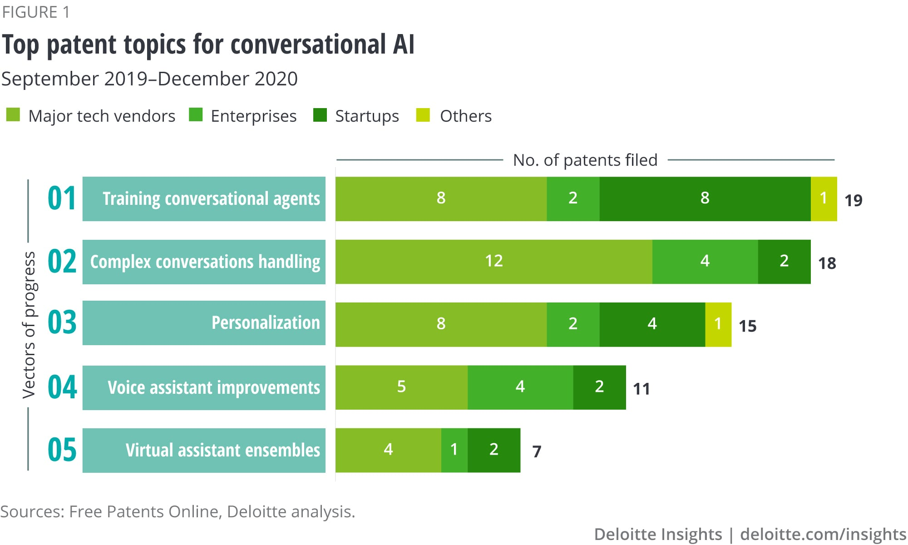
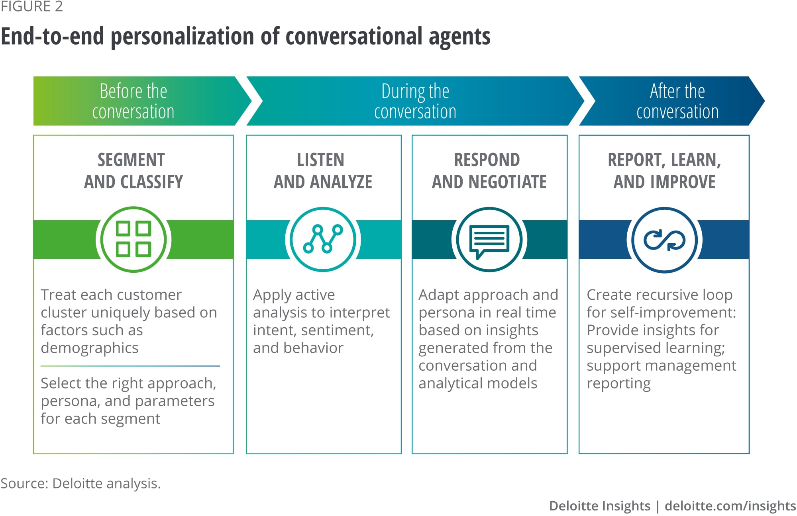

什么是聊天机器人（chatbot）?
聊天机器人是一种计算机程序，它使用人工智能 (AI) 和自然语言处理 (NLP) 来理解客户问题并自动响应，模拟人类对话。聊天机器人可以通过文本输入、音频输入或两者同时响应用户的问题和请求，从而使用户轻松找到所需的信息，而无需人工干预。
如今，聊天机器人技术几乎无处不在，从家里的智能扬声器到工作场所的消息应用程序。 最新的人工智能聊天机器人通常被称为“虚拟助手”或“虚拟代理”。 他们可以使用音频输入，例如 ChatGPT, Apple 的 Siri、Google Assistant 和 Amazon Alexa，或者通过 SMS 短信与您互动。 无论哪种方式，您都可以通过对话方式询问有关您需要什么的问题，聊天机器人可以通过回复和后续问题帮助优化您的搜索。
聊天机器人的发展历史
聊天机器人的发展历程始于20世纪60年代，当时人们开始研究如何让计算机模拟人类语言交流。最早的聊天机器人是ELIZA，由麻省理工学院的Joseph Weizenbaum开发。它基于简单的模式匹配技术，可以模拟心理医生的对话，引起了广泛的关注。
A.L.IC.E.（人工语言互联网计算机实体）
Alice是一种通用语言处理聊天机器人，它使用启发式模式匹配来进行对话。1995年，Richard Wallace 率先构建了Alice。它以前被称为Alicebot，因为它首先在一台名为Alice的计算机上运行。
该程序使用称为人工智能标记语言(AIML)的XML模式，它有助于指定对话规则。1998年，程序用 Java 编辑，2001年华莱士印制了AIML规范。从那里开始，其他开发人员用不同的编程语言和各种外语起草了Alice的免费和开放源代码。
该程序模拟通过 Internet 与真人聊天。Alice是一位年轻的人类女性，她会告诉用户她的年龄、爱好和其他有趣的事实，并回答用户的对话。
Siri 是 Apple 于 2010 年为 iOS 开发的；它是使用自然语言UI的智能个人助理和学习导航器。之后它为所有AI机器人和PA铺平了系统。
美国专利商标局的一项专利申请详细介绍了一项新的Apple服务，用户可以通过Messages与Siri进行查询和对话。新专利与去年底发布的专利类似，但现在包括与音频、视频和图像文件的更深入集成。
与其他短信和Facebook Messenger类似，Apple的专利描述了一种Siri，它可以在用户无需大声聊天的情况下执行当前任务。这在一些公共领域可能会有帮助。
他们可以回复用户传输的文本、音频、图像和视频。苹果表示，这将在消费者和数字助理之间带来更丰富的互动体验。
该专利提供了Siri与用户在Messages中进行对话的几个示例，用户可以提问。
Cortana首次亮相于微软的Build 2014开发者大会上，并直接集成Windows手机设备和Windows1 0 PC中。
该程序使用语音识别和相关算法来获取和响应语音命令。
要开始使用，他们必须在搜索框中键入问题，或选择麦克风并与Cortana交谈。如果一个人不太确定要说什么，他们会在锁定屏幕上以及通过选择任务栏上的搜索框在Cortana主页中看到建议。
Cortana可以执行诸如基于时间、地点或人物的提醒、发送电子邮件和文本、创建和管理列表、聊天和玩游戏、查找事实、文件、位置和信息等任务。

Alexa是亚马逊开发的智能个人助理。它于 2014 年推出，现已内置于 mazon Echo、Echo Dot、Echo Show等设备中。还有一个Alexa应用程序和更多来自第三方制造商的内置Alexa的设备。
您所要做的就是说“Alexa，播放一些音乐”或“Alexa，给我找一家意大利餐厅”，她会帮助您。
只用你的声音，你就可以搜索网络、播放音乐、创建待办事项或购物清单、设置闹钟、播放播客、播放有声读物、获取新闻或天气预报、控制你的智能家居产品等等。
为了增加任何支持Alexa的设备的功能，亚马逊允许开发人员使用Alexa Skills Kit (ASK)为Alexa构建和发布技能。您可以使用 Alexa 应用程序免费下载技能。
2022年，OpenAI 发布 GPT-3。 它可用于语言任务，例如翻译、摘要、问答和文本生成。 它甚至可以执行编码和翻译等任务，而无需对这些任务进行明确的培训。据瑞银银行称，到 1 月底，即推出两个月后，ChatGPT 的用户已超过 1 亿，使其成为“历史上增长最快的消费者应用程序”。
AI已经在许多产品的幕后使用，但 ChatGPT 将其置于中心位置，让人们直接与 AI 聊天。 ChatGPT 可以撰写各种风格的文章、解释复杂的概念、总结文本和回答琐事问题。 它甚至可以（勉强）通过法律和医学考试。 它还可以综合来自网络的知识：例如，列出符合特定条件的度假胜地，或推荐菜单或行程。 如果被问到，它可以解释其推理并提供详细信息。 简而言之，如今人们使用搜索引擎做的许多事情都可以通过聊天机器人做得更好。
2 月 7 日，已向 OpenAI 投资超过 110 亿美元的微软发布了其搜索引擎必应的新版本，其中包含 ChatGPT。 微软老板萨蒂亚纳德拉认为这是他挑战谷歌的机会。 就其本身而言，谷歌已宣布其自己的聊天机器人 Bard 作为其搜索引擎的“伴侣”。 它还以 3 亿美元入股 Anthropic，这是一家由 exOpenAI 员工创立的初创公司，该公司开发了一款名为 Claude 的聊天机器人。 被誉为中国谷歌的百度在宣布将在 3 月份发布其聊天机器人 Ernie 后股价大幅上涨。
聊天机器人：当前的技术和发展
会话代理是人工智能的主要应用之一
对话式 AI 解决方案——包括聊天机器人、虚拟代理和语音助手——在过去几年中变得非常流行，尤其是在前一年，由于 COVID-19 的影响加速了采用。 来自各种对话式 AI 供应商的数据表明，对话式代理处理的交互量在多个行业增加了 250%。6 这些解决方案已经为许多组织带来了巨大的价值。 根据最近的一项调查，大约 90% 的公司提到投诉解决速度更快，超过 80% 的公司报告使用对话式 AI 解决方案增加了呼叫量处理。 7 然而，该技术仍然存在许多限制，使其难以使用并限制其 价值。 幸运的是，创新者正在应对这些挑战。 我们预计这将导致未来几年更广泛地采用对话机器人。 技术和人际互动策略师应该注意这一点。
对话式 AI 进步的五个向量
为了解创新者如何努力增强对话式 AI 技术，我们分析了过去几年在美国提交的对话式 AI 相关专利。8 我们的分析以及德勤自身为许多客户实施对话式 AI 解决方案的经验表明 我们可以期待至少在五个领域取得进展（图 1）。 这些发展可能会增加对话代理的价值，并有助于扩大其跨行业的使用范围。
训练会话代理
对话代理需要接受与其所用领域相关内容的培训。例如，联络中心聊天机器人需要培训数据，例如实时代理日志以及之前对话和常见问题解答的记录。 但是，使用传统的基于规则或手动方法来训练会话代理既乏味又耗时。 这个过程可能需要长达 6 到 9 个月的时间。9 而且往往会导致不充分的理解和不满意的——甚至是有偏见的——行为。10
对话式 AI 最常见的创新领域之一是改进培训过程。 在我们的调查中，大约 20% 的专利与此相关——顶级类别。11 创新侧重于自动化和加速培训过程，以更好地理解用户的输入并提高响应质量。
一项专利涵盖了自动生成问题和响应以培训客户服务代理的技术，从过去客户与类似虚拟助理或特定实体数据源（如网站）的交互中获取新数据。12 另一项专利描述了使用深度学习训练的医疗保健聊天机器人—— 基于无监督学习技术。 聊天机器人可以根据症状和保险范围回答患者关于合适的医疗保健提供者的询问。 它从以前的交互中学习，以便在尽可能少的迭代中为未来的交互提供响应。 13 第三种方法描述了一种检测和减轻训练数据偏差的方法，例如，这种方法可能会导致在客户不高兴时将其标记为不高兴。 14 总的来说，这些培训创新可以让对话代理更快地启动和运行，从而产生更令人满意和更有效的交互。
处理复杂的对话
如果您可以简单地指示您的私人助理清空您下午的日历并在 30 分钟内叫一辆出租车送您去机场，这不是很好吗？ 大多数会话机器人无法满足此类请求，因为它们被设计为仅处理简短的查询。 它们以用户请求的“tic-tac 流”格式运行，机器同步响应。 因此，他们无法理解单个用户命令中的多个意图，导致体验低效，甚至让用户感到沮丧。
在我们的分析中，大约 18% 的专利解决了复杂对话场景的处理，例如在单个话语或多主题对话中涉及多个命令。15 例如，一项专利描述了这样一种场景，即被要求与 一个客户端，虚拟助手可以在后台处理一系列任务，例如日历冲突解决和餐厅餐桌预订。 16 另一项专利涉及使用“概念格”技术来构建主题无关的代理，可以自动构建一个 引导讨论的对话结构。 例如，使用概念格的产品推荐代理可以就目录中提到的任何产品类别自主地与用户进行交互。 概念格是任何感兴趣对象（例如相机、车辆、度假套餐、日托提供者）的图形表示及其作为节点的属性，这些节点与代表对象属性的不同可能组合的边连接。 17 总的来说，有了这些进步，自主代理可以 异步有效地管理范围广泛的对话。
个性化以获得更好的性能
当聊天机器人个性化对话时，客户更有可能采取所需的行动。 在我们为一系列客户实施聊天机器人以支持大量业务流程的工作中，我们发现个性化可以显着提高聊天机器人在用户体验、运营成本和业务成果方面的性能。 （有关会话代理的端到端个性化的观点，请参见图 2。）个性化是创新的一个主要领域，在我们的调查中约占专利的 16%。18 例如，我们审查的一项专利描述了客户服务代理 根据客户的特点实时定制他们的沟通方式。 如果客户不耐烦，坐席会提高语速； 如果客户看起来非常不满意，数字代理将让人工代理参与对话。 19另一项专利描述了一种家庭助理，它可以自动适应用户的年龄，并根据用户的沟通方式在适当的时候切换到“儿童模式”。 
你能听到我吗？
数字语音助手已成为主流。 超过一半的美国成年人在智能手机上使用它们。21 但语音助手也有其弱点。 例如，它们可能会在嘈杂的环境中失败。 而且它们的密集处理要求会迅速耗尽便携式设备的电池。 技术供应商和电子设备制造商以及其他创新者已经设计出提高语音助手性能的方法； 在我们的调查中，11% 的专利都集中在这个领域。22 它们包括自动滤除背景噪音以提高虚拟助手语音识别能力的技术。23 创新还针对激活语音助手的高效和精确方法。 一项专利描述了一种降低虚拟助手被背景噪音错误触发的可能性的方法。 例如，系统将能够忽略在后台播放的电视广告中使用的唤醒词。24 基于这些发展，我们可以期待在繁忙的环境（包括办公室）中更多地使用语音助手。
虚拟助理合奏
会话机器人通常设计用于狭窄的目的，例如处理一组与业务功能（如 IT、人力资源或财务）相关的特定查询。 构建通用机器人的尝试通常都收效甚微。 另一个创新领域旨在通过描述将多个专业聊天机器人组合成一个整体的有效方法来回避这一挑战。 这些虚拟助理集合可以通过自动推断意图并将请求路由到适当的专家代理来为用户处理一系列任务。 根据我们的分析，大约 7% 的专利针对多机器人架构。 25 其中一项专利描述了具有单一主界面的企业助理，该界面可以将用户引导至 CRM、ERP 和人力资本管理 (HCM) 的虚拟助理专家。26 另一项专利描述了一种构建个人或家庭助理的方法，可能会提出替代方案 无法响应用户查询时的服务提供商。 例如，助手可能会说，“Alexa 不知道如何回答那个问题。 你想让谷歌尝试回答这个问题吗？”27 协调多个机器人的技术以及它们与内部系统和用户的交互使得维护和扩展对话机器人变得更加容易。 通过路由机制或中间件提供的协调，开发人员可以专注于从聊天机器人获得针对特定任务的高性能，并添加新的聊天机器人而不是扩展现有聊天机器人。 28
从交谈到参与
会话代理有其局限性，但许多已经证明了它们的价值。 而且技术越来越好。 随着技术的进步，重要的是要记住，对话式人工智能的成功不仅仅取决于技术； 以行为科学为依据的良好体验设计至关重要。 总的来说，这些进步的方向指向一个未来，在这个未来，参与和有效的对话代理将越来越普遍。 这些代理很可能能够通过个性化响应来管理复杂的对话场景。 即使在办公室和公共交通等繁忙环境中，基于语音的助手也将变得可用。 代理的模块化集合将能够处理不同的任务集。 会话代理的培训将变得更加容易，一些代理可以在数周而不是数月内启动并运行。 从这些进步的方向来看，对话式人工智能可能会有很长的生命周期。 与对话代理的完美体验感觉就像魔法一样。 会话式 AI 并不神奇,但它一直在靠近。